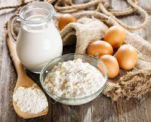
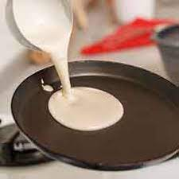
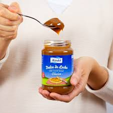
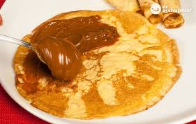
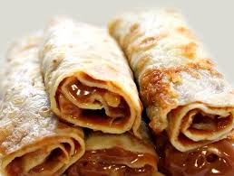
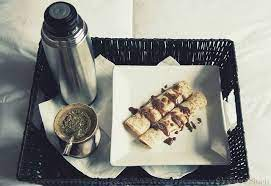

Panqueques con dulce de leche

"El camino más corto para llegar al corazón pasa por el estómago"
Ingredientes
Para 20 panqueques (aproximadamente):
- 2 huevos enteros
- 220 grs. de harina
- 500 ml. de leche
- Un poco de Mantequilla
- Dulce de Leche para el relleno
- Azucar glass y fruta fresca para decorar
Preparacion
-

- En un bol, bate los huevos con una batidora de varillas hasta que estén bien mezclados.
- Vierte 250 ml de leche y mezcla hasta combinar.
- Agrega 100 gramos de harina tamizada y bate hasta obtener una mezcla uniforme.
- Incorpora el resto de la harina y la leche, continúa batiendo hasta lograr una masa lisa y líquida.
- Deja reposar la mezcla durante unos minutos.
- Calienta una sartén a fuego fuerte y añade un trozo pequeño de mantequilla.
- Cuando la sartén esté caliente, vierte una porción de la preparación en el centro y mueve la sartén para distribuir la masa de manera uniforme por todo el fondo. 
- Regresa la sartén al fuego, agitándola de vez en cuando.
- Una vez que los bordes comiencen a despegarse, da vuelta el panqueque con cuidado usando una espátula o un movimiento hábil con la sartén, si te sientes seguro.
- Repite el proceso para preparar el resto de los panqueques, añadiendo una nueva porción de mantequilla cuando sea necesario
- Apila los panqueques uno sobre otro para mantenerlos calientes y evitar que se sequen. 
- Rellénalos untándoles dulce de leche y luego enróllalos 
- Puedes optar por rellenarlos con nocilla, mermelada u otro ingrediente de tu preferencia. 
- Si buscas darles un toque especial, colócalos individualmente en un plato, espolvorea un poco de azúcar glass y decóralos con frutos rojos, como fresas o frambuesas, para realzar su presentación.
- También puedes reservarlos para rellenarlos con verduras o carne y preparar deliciosos canelones. 
Informacion Nutricional
- Total en la receta:
- 1849 kcal
- Proteinas
- 59,8 grs
- Carbohidratos
- 236 grs
- Grasas
- 72.4 grs
- CG (Carga glucemica)
- 138,9 u
Algo de historia
Los panqueques tienen una historia ligada a los días de abstinencia durante la Semana Santa, tras levantarse la
prohibición de consumir leche, manteca y huevos que había perdurado durante siglos. Aunque algunos relatos los
sitúan en Rusia, su desarrollo tal como los conocemos tuvo lugar en Norteamérica, donde recibieron el nombre de
"pancake", que en ingles significa "torta de sartén", ya que la masa utilizada para prepararlos es la base de
algunas tortas y se cocina en la sartén.
Los panqueques pueden ser salados o dulces; en el primer caso, los más conocidos para nosotros son los canelones
con sus diversos rellenos. Sin embargo, la versión con dulce de leche es completamente nuestra,
al menos en la región del Río de la Plata.